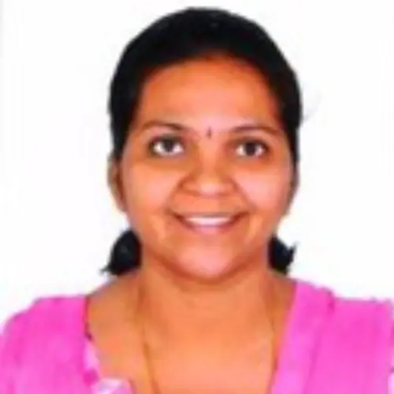

India member
Dr. Hema B. P
Name: Dr. Hema B. P Highest qualification and awarding university Ph. D, Karnatak University, Dharwad, India Designation Associate Professor Employer JSS Science and Technology University, Mysuru Contact details: Email: WhatsApp number/Mobile number hemabp@jssstuniv.in hemabpr…
Published 5 July 2022 · Updated 7 April 2025

| Name: | Dr. Hema B. P |
| Highest qualification and awarding university | Ph. D, Karnatak University, Dharwad, India |
| Designation | Associate Professor |
| Employer | JSS Science and Technology University, Mysuru |
Contact details:
|
|
| hemabp@jssstuniv.in hemabprabhu@gmail.com | |
| +91 9686677599 | |
| Home page link on your employer web site if available | https://jssstuniv.in/ |
| Key areas of interest | Ex situ conservation of plants, Water quality monitoring, Food bioactive isolation and characterisation |
| Web links for your research profile on Google scholar; ORCID or Research Gate (if available); only one of them please. | https://scholar.google.com/citations?user=zT8gReMAAAAJ&hl=en |
Dr. Hema B.P. is a Biotechnologist with teaching and Research experience in Plant Biotechnology, Skills in Plant tissue culture, and In silico Drug designing. She has over twenty years of work experience, in research and academics. She has worked for more than a year at Azo Fertilizers Pvt. Ltd, in Mysuru. After completion of her Ph. D in 2005, she joined Department of Biotechnology, Sri Jayachamarajendra College of Engineering as lecturer, teaching various theory and practical subjects in the Biotechnology to undergraduate and post graduate engineering Students. Guiding undergraduate and post graduate engineering Students for their project work and Ph. D scholars. She has published more than 20 research articles in national and international journals and presented papers at various reputed conferences. Her research interest is on conservation of endangered medicinal plants by means of ex situ conservation and production of bioactive plant metabolites.
Research Project
Successfully completed European Society of Evolutionary Biology‘s Outreach Program entitled “Origin of life and continuity of life”.
Key Publications/Reports
- Sowmya N ,Haraprasad N and Hema B P (2019) A Comparative Study on Phytochemical Evaluation of Peels of Citrus auriantum, Citrus maxima and Citrus sinensis using different solvent– Profiting Fruit Waste, IJRAR, 6:802-805
- Sowmya N ,Haraprasad N and Hema B P (2019) Exploring the total flavonoid content of peels of Citrus auriantum, Citrus maxima and Citrus sinensis using different solvents and HPLC- analysis of flavonones – Naringin and Naringenin in peels of Citrus maxima. The Pharma Innov. 8:12-17
- Chiranth M Prakash, Pavithra C and Hema B.P. (2014) “Phytochemical Screening of Antioxidant and Anti-hemolytic activity of different extracts of Carthamus tinctorius” at “Biogalaxia-2014”, A National Level Symposium, organized by Department of Microbial Biotechnology Bharathiar University, Coimbatore on 17th October 2014 won the First prize in poster presentation.
- Hema B.P.,N. Haraprasad, Prakash kumar Jha and G Deepti (2014). “Induction of multiple shoots from Citrullus colocynthis, a rare medicinal plant of Western Ghats”, presented at International conference on Biodiversity, Bioresources and Biotechnology on 30th and 31st Jan 2014, The Quorum hotel, Mysore.
- Hema B P, Haraprasad N, Prakash Kumar Jha and Deepthi G (2012) Ex situ conservation of Citrullus colocynthis (Indravaruni), a rare species of Western Ghats in one day national conference on ‘Integrative plant Biology and Agribiotechnology’ organized by Karnataka state Higher education council, Bangalore, on 29th Feb 2012 at Bangalore, won the best poster certificate.
- Haraprasad, N, Sindhoora Bhargavi G, Praveen M.J, Attapon Poetam, Deepal R, Hema B.P, Priyanka Uday and Seemanthini C. (2011) In silico screening of natural compounds against Pandemic disease-Swine influenza in Indo-Us symposium on “Fronteirs in Medicinal chemistry and Drug discovery” at JSS medical college, 21st-23rd April 2011.